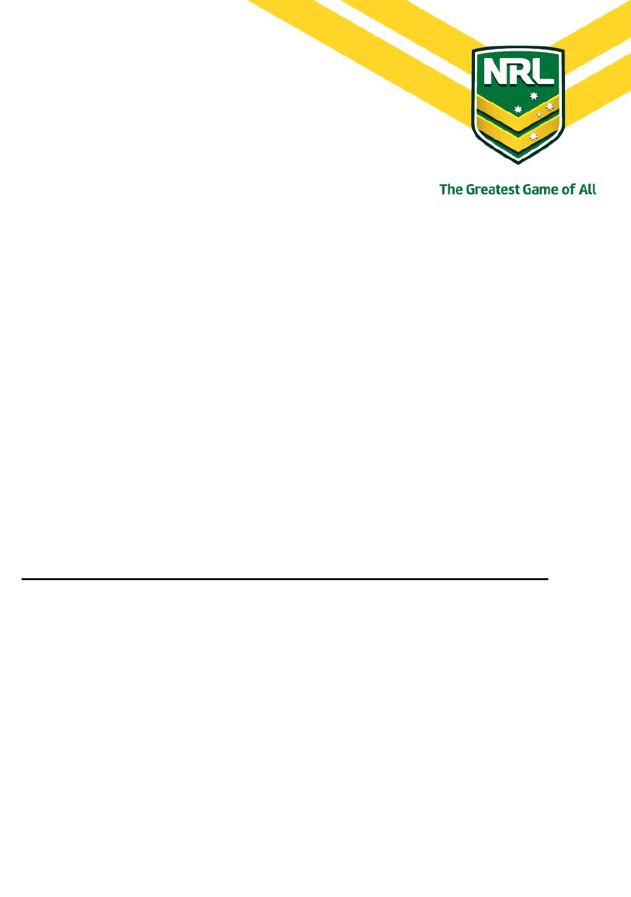
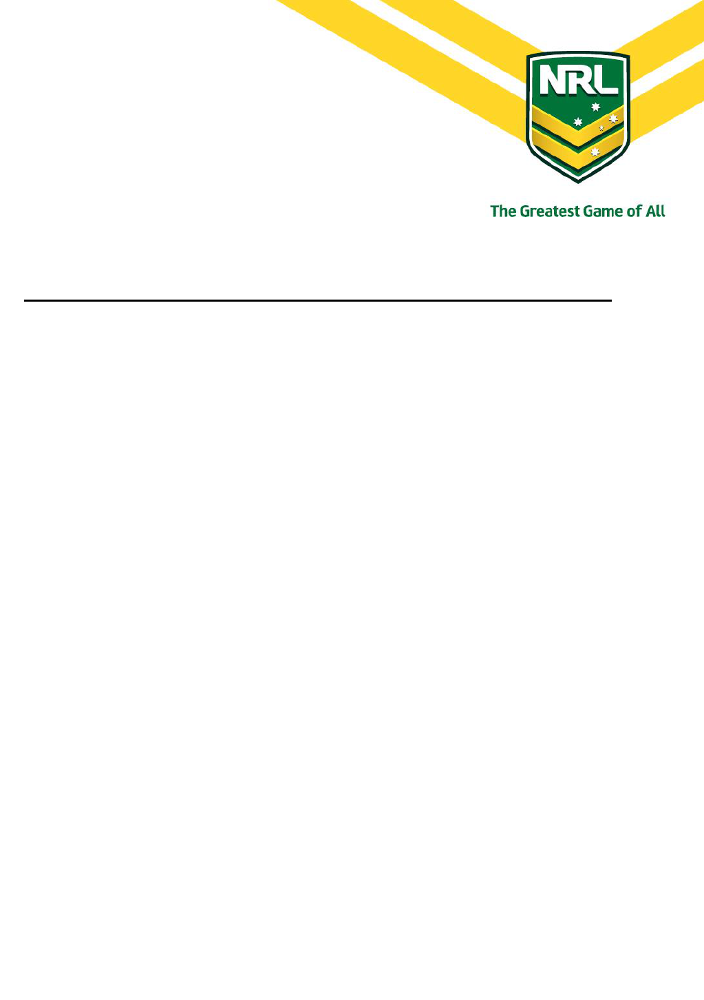

National Rugby League
Privacy Policy
1
This Privacy Policy covers National Rugby League Limited and each of its associates, related entities and
subsidiaries (together, the NRL). For the avoidance of doubt, a reference in this Policy to the NRL
(including the NRL doing or not doing an act) is a reference to, and is intended to also cover, the Leagues.
The NRL recognises that privacy is important and that an individual has the right to control his or her
Personal Information. The NRL is committed to protecting the privacy of individuals and their Personal
Information which the NRL collects during the course of administering and developing the game of Rugby
League.
This Privacy Policy is based on the National Privacy Principles in Schedule 3 to the Privacy Act
and sets
out the way the NRL handles the Personal Information it collects, uses, discloses and stores on:
(a) Rugby League participants, including Players and Officials (together, Participants);
(b) persons who register for any NRL sanctioned accreditation or licensing program;
(c) persons who purchase or receive information about tickets to Matches, including the NRL, State
of Origin, National Youth Competitions and Representative Matches;
(d) persons who subscribe and/or register to any Rugby League membership program, participation
program, newsletter or promotional offer; or
(e) persons who request services from the NRL or more information about the NRL, Competitions or
Matches
(you, your).
1. COLLECTION
1.1 The NRL collects Personal Information about you as is necessary for one or more of the
NRL’s functions or activities in administering the game of Rugby League including for the
following primary purposes:
(a) organisation, conduct and promotion of Competitions and Matches (including for
the purpose of providing information and making ticket offers to you);
(b) direct communication with you by Rugby League Administrators;
(c) disclosure to Rugby League Partners, unless you have indicated that you do not
want to receive any communication from Rugby League Partners;
(d) compliance with the NRL Rules, including the administration and development of
Rugby League (if you are a Participant); and
(e) any use that is obvious at the time the Personal Information is collected.
1.2 Members of the NRL corporate group may also share Personal Information with each other
for these primary purposes and otherwise in administering and developing the game of
Rugby League.

National Rugby League
Privacy Policy
2
1.3 The types of Personal Information the NRL may collect depends on the purposes for which it
is collected but may include (without limitation):
(a) your name, gender, occupation, residential address, email address, telephone
number and other contact details;
(b) your favourite NRL Club and other information dealings with the NRL or the Clubs
such as memberships, subscriptions and attendance history at NRL Matches where
you have used your membership to purchase tickets;
(c) purchasing preferences and financial details.
1.4 Where it is reasonable and practicable to do so, the NRL will only collect your Personal
Information from you. If you are a Minor, the NRL may collect Personal Information about
you from your parent or legal guardian.
1.5 The NRL will collect Personal Information from you mainly through relevant forms (whether
in hard copy or online) approved by the NRL or the Leagues from time to time. However,
during the ordinary course of its activities and functions, the NRL may also collect Personal
Information that is given to them by a third party (such as a corporate partner of the NRL or
Clubs, or information that is on public record). This information from third parties forms part
of your Personal Information.
1.6 If the NRL collects Personal Information about you from someone other than yourself (or
your parent or legal guardian), the NRL will take reasonable steps to ensure you are made
aware of the matters listed in clause 1.7 below. Generally, if appropriate, the NRL will tell
you why it is collecting Personal Information and how it plans to use it, unless it is
impracticable to do so or it is self-evident.
1.7 Before or at the time of collection of Personal Information (or if that is not practicable, as
soon as practicable after), the NRL will take reasonable steps to ensure that you are aware
of:
(a) how to contact the NRL in relation to this Privacy Policy;
(b) the fact that you can gain access to the information held on you;
(c) the purposes for which the information is collected;
(d) the organisations (or types of organisations) to which the NRL usually discloses
information of that kind;
(e) any law that requires the information to be collected; and
(f) the main consequences (if any) for you if all or part of the information is not
provided.
National Rugby League
Privacy Policy
3
2. USE AND DISCLOSURE
2.1 The NRL will not use or disclose Personal Information about you for a secondary purpose
other than the primary purposes (the secondary purpose) identified in clause 1.1 above
unless:
(a) you have consented to the use or disclosure;
(b) both of the following apply:
(i) the secondary purpose is related to the primary purpose of collection and,
if the Personal Information is Sensitive Information, directly related to the
primary purpose of collection; and
(ii) you would reasonably expect the NRL to use or disclose the information for
the secondary purpose.
2.2 The NRL may use or disclose your Personal Information to a Rugby League Administrator
for the secondary purpose of direct marketing communication, if the NRL has your consent
for such use. In other cases, if the information is not Sensitive Information, the NRL may use
the information for the secondary purpose of direct marketing communication only if the
following are satisfied:
(a) it is impracticable to seek your consent before that use;
(b) the NRL will not charge you for giving effect to a request by you not to receive
direct marketing communication;
(c) You have not made a request to the NRL not to receive direct marketing
communication;
(d) the NRL always prominently displays a notice or actionable option that you may
express a wish not to receive any further direct marketing communication; and
(e) each written direct marketing communication by the NRL with you sets out the
NRL’s contact details including business address, telephone and fax numbers, and
email address.
2.3 The NRL may disclose your Personal Information to its service providers such as ticketing
agents, mail houses or other similar third-party organisations for the purpose of
implementing the primary purposes, including implementing ticket requests and
communicating Rugby League related offers. For example, the NRL uses third party credit
card payment gateway services on its website. If you pay for tickets or services through the
NRL’s website, the NRL will be required to provide certain financial details to the third party
service provider to effect the transaction. The NRL requires these third party organisations
to keep your contact details and Personal Information confidential and only use them for
the designated purpose.
National Rugby League
Privacy Policy
4
2.4 The NRL may also:
(a) disclose your Personal Information to its affiliates (including without limitation the
Leagues, a Competition Administrator and a Club) to enable them to administer the
game of Rugby League in their area and provide related activities and services; and
(b) unless you inform the NRL otherwise, disclose your information to sponsors and
partners to enable them to provide you with information, materials and promotional
opportunities.
2.5 The NRL may, in its discretion, disclose your Personal Information where it is otherwise
permitted or required to do so under the National Privacy Principles or at law.
3. DATA SECURITY
3.1 The NRL will take reasonable steps to protect the Personal Information it holds about you or
that is within its direct control from misuse and loss and from unauthorised access,
modification or disclosure. However, the internet is an inherently risky environment and any
information you send via digital means is sent at your own risk.
3.2 The NRL will take reasonable steps to destroy or permanently de-identify Personal
Information if it is no longer needed for any purpose for which the information may be used
or disclosed under clause 2.
4. OPENNESS, ACCESS AND CORRECTION
4.1 At your request, the NRL will take reasonable steps to let you know, in general terms, what
sort of Personal Information it holds, for what purposes, and how it collects, holds, uses and
discloses that information.
4.2 The NRL will provide you, on request, with access to the Personal Information it holds on
you, except to the extent that the NRL is not required to do so under Article 6 of the National
Privacy Principles.
4.3 Before supplying any Personal Information to you, the NRL must be reasonably satisfied as
to your identity (for example, by asking to see your passport or driver’s licence). The NRL is
not under any obligation to provide Personal Information to you where the NRL is not
required to do so under the National Privacy Principles or otherwise at law.
5. NO LIABILITY
5.1 To the maximum extent permissible by law, the NRL expressly disclaims any liability for a
breach of this Policy.
5.2 By providing the NRL with Personal Information, you acknowledge that any damage caused
to you or any other individual by the disclosure of that information shall be limited to the
amount recoverable under applicable legislation and otherwise not be recoverable from the
NRL or any of its related bodies.
National Rugby League
Privacy Policy
5
6. ANONYMITY
Wherever it is lawful and practicable, you (other than a Participant for registration purposes) will
have the option of not identifying yourself when entering transactions with the NRL.
7. TRANSBORDER DATA FLOWS
7.1 The NRL may transfer Personal Information about you to someone who is in a foreign
country only if:
(a) you consent to the transfer;
(b) the transfer is necessary for the performance of a contract between you and the
NRL, or for the implementation of pre-contractual measures taken in response to a
request from you;
(c) the transfer is necessary for the conclusion or performance of a contract between
the NRL and a third party that is in your interests;
(d) all of the following apply:
(i) the transfer is for your benefit;
(ii) it is impracticable to obtain your consent to that transfer; and
(iii) if it were practicable to obtain such consent, you would be likely to give it;
or
(e) the NRL has taken reasonable steps to ensure that the information that it has
transferred will not be held, used or disclosed by the recipient of the information
inconsistently with the National Privacy Principles (for example, by adopting
appropriate contractual clauses).
7.2 Clause 7.1 does not apply to the transfer of Personal Information in accordance with the
NRL Rules, including to facilitate the registration of a Player by an international Rugby
League association.
8. SENSITIVE INFORMATION
8.1 The NRL will not collect Sensitive Information about you if you are not also a Participant.
8.2 The NRL will not collect Sensitive Information about a Participant (except as permitted by
Article 10 of the National Privacy Principles), unless:
(a) specifically permitted to do so under the NRL Rules, including for health, medical
and anti-doping testing purposes and investigation of disputes (whatever its nature);
(b) that Participant has consented;
National Rugby League
Privacy Policy
6
(c) the collection is required by law;
(d) the collection is necessary to prevent or lessen a serious and imminent threat to the
life or health of any individual, where that Participant:
(i) is physically or legally incapable of giving consent to the collection; or
(ii) physically cannot communicate consent to the collection; or
(e) the collection is necessary for the establishment, exercise or defence of a legal or
equitable claim.
9. INQUIRIES PROCEDURE
9.1 All complaints and inquiries concerning your Personal Information will be directed to the
NRL Privacy Officer (or a person who is delegated that function form time to time). This will
ensure that all such matters will be dealt with:
(a) consistently across the NRL (rather than having a series of different approaches
across the NRL); and
(b) in accordance with applicable law, including the Privacy Act.
9.2 At all times, privacy complaints will be treated seriously, dealt with promptly and
confidentially, and will not affect your existing obligations or commercial arrangements
with the NRL.
10. INTERPRETATION
10.1 Any capitalised terms or phrases used but not defined in this Policy have the meaning given
to them in the Privacy Act.
10.2 Any reference to the NRL in this Privacy Policy is a reference to all those entities individually
and collectively unless the context requires otherwise.
10.3 This Privacy Policy is designed to safeguard Personal Information and to comply with the
law and so may need to be varied or changed by the NRL from time to time.
10.4 Headings are for ease of reference only and do not affect the meaning of the parts of this
Policy.
10.5 The singular includes the plural and vice versa and words importing a gender include other
genders.
10.6 Other grammatical forms of defined words or expressions have corresponding meanings.
10.7 A reference to a Rule or sub-Rule or to a Schedule or Guideline is a reference to a Rule or
sub-Rule of these Rules or to a Schedule or Guideline to these Rules respectively.

National Rugby League
Privacy Policy
7
10.8 A reference to a document or agreement, including these Rules, includes a reference to that
document or agreement as amended, novated, altered or replaced from time to time.
11. DEFINITIONS
In this Policy:
Club means any Club registered with the NRL or the Leagues from time to time. A reference to Club
includes a club admitted by:
(a) a Competition Administrator to field a team in a Competition; or
(b) the NRL to field a team in a NRL Competition.
Club Official means any person involved with the administration, management or organisation of a Club
(whether paid or unpaid), including employees, contractors, consultants, volunteers, officers and
directors and representatives.
Competition means any competition, tournament or league registered or carried out under the auspices
of the NRL or the Leagues including the pre-season, season proper, finals series and any post season
tournament or knockout cup competition and any other football competition or tournament organised,
hosted by or carried out under the auspices the NRL or the Leagues.
Competition Administrator means the entity responsible for the conduct and staging of a Competition
and includes (without limitation) the NRL and the Leagues (including the divisions and associations that
make up the Leagues).
Health Information means:
(a) information or an opinion about:
(i) your health or a disability (at any point in time);
(ii) your expressed wishes about the future provision of health services to you; or
(iii) a health service provided, or to be provided, to you, that is also Personal Information;
(b) other Personal Information collected to provide, or in providing, a health service; or
(c) other Personal Information about you collected in connection with the donation, or intended
donation, by you of your body parts, organs or body substances.
Leagues means NRL, Queensland Rugby League, New South Wales Rugby League, Country Rugby League
of NSW and the States and Territories of Australia that do not currently have a Club competing in the NRL
Competition based within their territorial limits.
National Rugby League
Privacy Policy
8
Match means a game of Rugby League football and includes any match staged, participated in,
sanctioned by, or played under the auspices of the NRL, the Leagues or a Competition Administrator
(including any match held as part of a Competition).
Match Official means any person in charge of safety or any other person appointed by the NRL, the
Leagues or a Competition Administrator to assume responsibility in connection with a Match including:
(a) The referee for a Match;
(b) The touch judges for a Match;
(c) If used, the in-goal touch judges for a Match;
(d) The interchange officials for a Match;
(e) The video referee for a Match;
(f) The sin-bin operator for a Match;
(g) The timekeeper or timekeepers for a Match;
(h) The ground manager for any ground where a Match is played;
(i) Any person who assists in the preparation for, or the conduct of, a Match (including the
organisation, management, control or administration of the Match as an event), and whether any
such persons is:
(i) Engaged by the NRL or a Club or otherwise;
(ii) An employee, contractor, agent, volunteer or otherwise; or
(iii) Paid or unpaid.
National Youth Competition means the National Under 20 elite Rugby League competition arranged,
organized and administered by the NRL.
NRL Privacy Officer means the person appointed by the NRL from time to time to deal with complaints
and inquiries under this Policy.
NRL Rules means its constitution, rules, regulations, policies and procedures and any other ancillary
document that governs the NRL in administering the game of Rugby League, as promulgated and
amended from time to time.
Official means:
(a) a Club Official, Match Official or Team Official;

National Rugby League
Privacy Policy
9
(b) an employee, consultant, officer or director of the NRL, the Leagues or a Competition
Administrator; or
(c) a member of a council, committee, panel or body constituted by the NRL, the Leagues or a
Competition Administrator.
Personal Information means information or an opinion (including forming part of a database), whether
true or not, and whether recorded in a material form or not, about an individual whose identity is
apparent, or can reasonably be ascertained, from the information or opinion.
Player means any person who is, from time to time, registered to a Club or is selected as a member of a
Representative Team, whether that person is male or female, junior or senior or an amateur or
professional.
Privacy Act means the
Privacy Act 1988
(Cth).
Representative Match means a team participating in a Representative Match.
Representative Team means any team selected to participate in a Representative Match.
Rugby League Administrators mean the NRL, the Leagues, a Competition Administrator or a Club (as the
case may be) with which the Participant has a direct relationship, including for the purposes of
registration with the League and participation in a Competition.
Rugby League Partners means any entity that has a commercial agreement or arrangement with the
NRL, Member Association, Competition Administrator or Club (as the case may be) and which you also
have a direct relationship with (including by participation in a Competition).
Sensitive Information means:
(a) information or an opinion about your:
(i) racial or ethnic origin;
(ii) political opinions;
(iii) membership of a political association;
(iv) religious beliefs or affiliations;
(v) philosophical beliefs;
(vi) membership of a professional or trade association;
(vii) membership of a trade union;
(viii) sexual preferences or practices; or
National Rugby League
Privacy Policy
10
(ix) criminal record, that is also Personal Information; or
(b) Health Information.
Team Official means any personnel involved with the management, preparation or participation of a
Club’s team (whether paid or unpaid), including the coaches, managers, medical staff (including team or
match day doctor), physiotherapists, gear persons and other support staff.